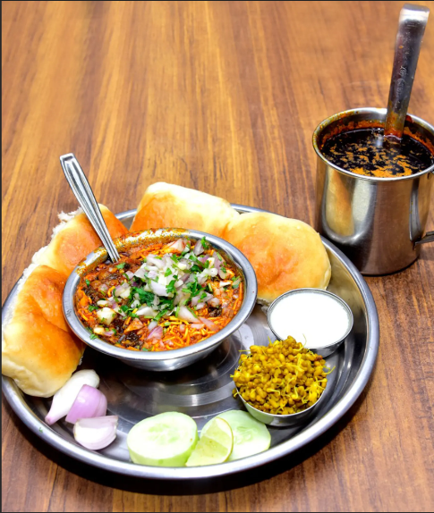

Misal Pav

Misal pav is a dish from the Indian state of Maharashtra. It consists of misal (a spicy curry) and pav (a type of Indian bread).
The final dish is topped with farsan or sev, onions, lemon and coriander (cilantro).
Ingredients
- 2 tablespoon virgin olive oil
- 1/2 cup grated coconut
- 1 teaspoon cumin seeds
- 1 1/2 peppercorns
- 1 dry red chili
- 1/2 cup chopped tomato
- 1/4 cup matki sprouts
- 1/4 cup green moong dal
- 1/2 teaspoon chilli powder
- 4 pav
- 1 cup chopped onion
- 4 tablespoon chopped coriander seeds
- 1 1/2 clove
- 1 cinnamon stick
- 1 1/2 cloves garlic
- 2 pinches powdered turmeric
- 1/4 cup boiled safed vatana
- 1 tablespoon boiled chawli
- salt as required
- 2 tablespoon lemon wedges
Steps
- Take a large non-stick pan and heat oil on a medium flame. Add onions and coconut in pan. Roast them on a medium flame for 2 minutes.
- Add cloves and peppercorns in pan and mix it well with onions. Add 1 tbsp coriander powder and ½ tsp cumin seeds. Mix well.
- Now add cinnamon stick along with garlic cloves and dry red chilli. Saute on a medium flame for 5 minutes. Toss the pan well.
- Remove from the flame and keep aside. Let it cool completely. When it is cool, transfer it to a blender jar and blend for a smooth powder.
- Now take a pressure cooker and heat oil on a medium flame and add remaining cumin seeds. When cumin starts to crackle, add onions and saute on a medium flame till onions become translucent.
- Now add the prepared misal masala and saute on a medium flame for another minute. Then add chopped tomatoes, turmeric powder and a tbsp. water.
- Mix well and cook on a medium flame for 2 to 3 minutes, while stirring occasionally.
- Now add the matki, safed vatana, moong and chawli sprouts and mix them well. Add 1 cup of hot water and season with salt. Mix well and pressure cook for 3 whistles.
- Allow the steam to escape before opening the lid. Then add the chilli powder and coriander. Mix well and simmer for 5 minutes, while stirring occasionally. Serve immediately with laddi pavs and lemon wedges.